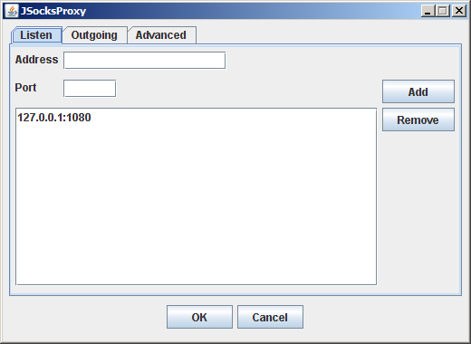
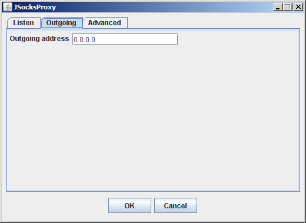
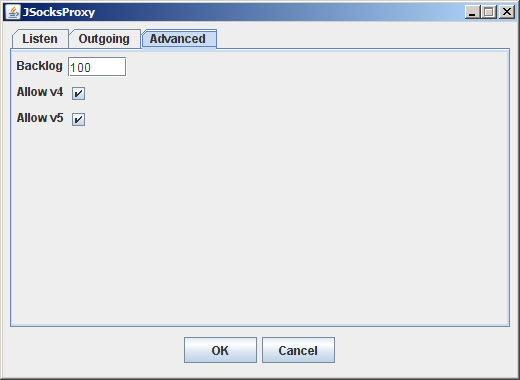

JSocksProxy 3
Copyright © 2006-2017 Kenny Colliander
Nordin
1. Introduction
JSocksProxy is written by Kenny Colliander Nordin in Java to be
platform independent. The reason for writing the SOCKS proxy was that
we needed a SOCKS proxy at work, but we had difficulties to find any
free good proxy, so I decided to write my own since the protocol is so
simple.
The proxy can handle SOCKS versions 4, 4a and 5, but only outgoing TCP
connections and has no support for authentication. IPv6 should be
supported for version 5, but it's not tested.
The proxy can be installed as a Pojo.
Licensed under the Apache License, Version 2.0 (the "License"); you may
not use this file except in compliance with the License. You may obtain
a copy of the License at
http://www.apache.org/licenses/LICENSE-2.0
Unless required by applicable law or agreed to in writing, software
distributed under the License is distributed on an "AS IS" BASIS,
WITHOUT WARRANTIES OR CONDITIONS OF ANY KIND, either express or implied.
See the License for the specific language governing permissions and
limitations under the License.
The application has one configuration file
jsocksproxy.xml
which may be located under the root or in the conf directory of your JBoss instance if
the application is running under JBoss.
3.1 Configuration file jsocksproxy.xml
This is an example of how this configuration file could look like.
The configuration file is reloaded every 60 seconds.
<?xml version="1.0" encoding="utf-8"?>
<configuration>
<backlog>100</backlog>
<outgoingAddress>0.0.0.0</outgoingAddress>
<listen>
<address>127.0.0.1</address>
<port>1080</port>
</listen>
</configuration>
3.1.1 outgoingAddress
- The ip address that should be used as source address for
outgoing connections.
3.1.2 backlog
- How many connections that are queued (1-100). This is not max
number of ongoing connections.
3.1.3 listen
Specifies on which addresses the server should listen for SOCKS clients.
Several listen elements may be specified.
- address - the ip address
- port - the port
3.2 Graphical Administration interface
The administration interface can be started by running jsocksproxy.jar and requires that
you locate the
jsocksproxy.xml.
The interface has English as default language but also supports localized text.
Supported localized texts:
- English (default)
- Swedish
3.2.1 Listen tab
You may add or remove end points that the socks server should wait for incoming connections on.

3.2.2 Outgoing tab
You may choose the outgoing address, the OS will decide the best suitable address if 0.0.0.0 is specified.

3.2.2 Advanced tab
Backlog tell the OS how many connections that should be queued for a specific end point and must be a value between 1 and 100.
Allow v4 and Allow v5 specifies which SOCKS protocols that may be used.

4. Obtain a new version
The home page for this project is
http://kecon.najt.nu/jsocksproxy/download/.
5. Requirements
JSocksProxy requires
Java 8 SE or later,
which can be downloaded from
https://java.com/en/download/.
6. Install
The JSocksProxy can be installed in two ways from this distribution. You can either install it as a Pojo (Plain Old Java Object).
6.1 Pojo Install
The install procedure may be difficult if you don't have any Java
experience. A simplified install procedure may be fixed in the future.
This install assume that you have Java 1.8 installed.
- Unzip dist/jsocksproxy.zip into a prefered installation
directory. You should get a install structure like:
/conf/example/jsocksproxy.xml
/lib/jsocksproxy.jar
/run.bat
- You can move /conf/example/jsocksproxy.xml
into the root directory, if you don't
want to write your own configuration file.
- Next step is to configure jsocksproxy.xml, read more about
the settings under configuration
- You can now start the SOCKS proxy manually using the run.bat
in Windows. I have not supplied any java service wrappers, but there
are several freewares that you can use.
The main class is nu.najt.kecon.jsocksproxy.JSocksProxy
Static start method: nu.najt.kecon.jsocksproxy.JSocksProxy.startService()
Static stop method: nu.najt.kecon.jsocksproxy.JSocksProxy.stopService()
7. Compile
You will need Java 8 SDK and Ant to build this project.
8. Changes
Documented changes.
8.1 Changes between 2.0 and 3.0
- Changed build environment from Ant to Maven.
- Updated from Java 1.6 to Java 1.8.
- Removed support for JBoss MBeans.
8.2 Changes between 1.0 and 2.0
- Replaced Log4J with Java's built-in logging.
- Changed XML format and is now using JAXB.
- Added graphical administration interface.
- Added support for JBoss MBeans.